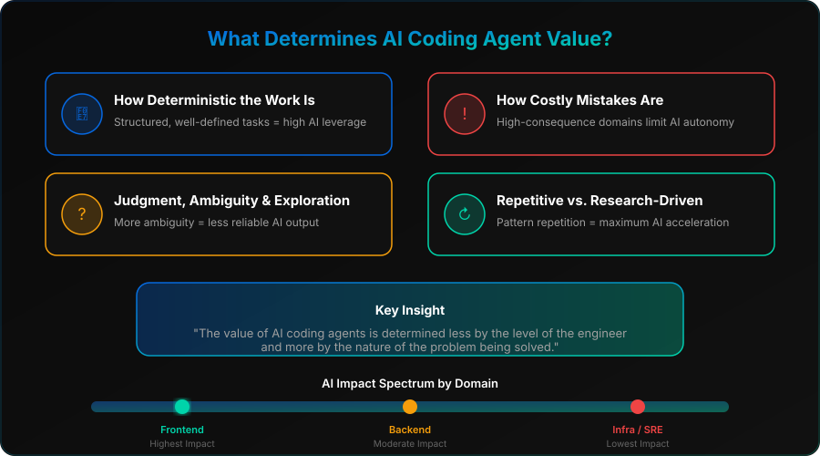
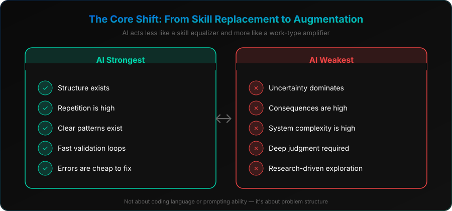
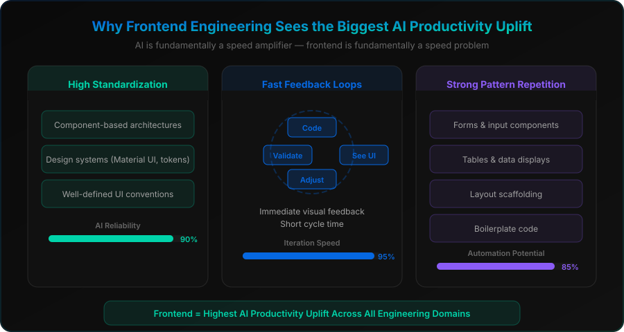
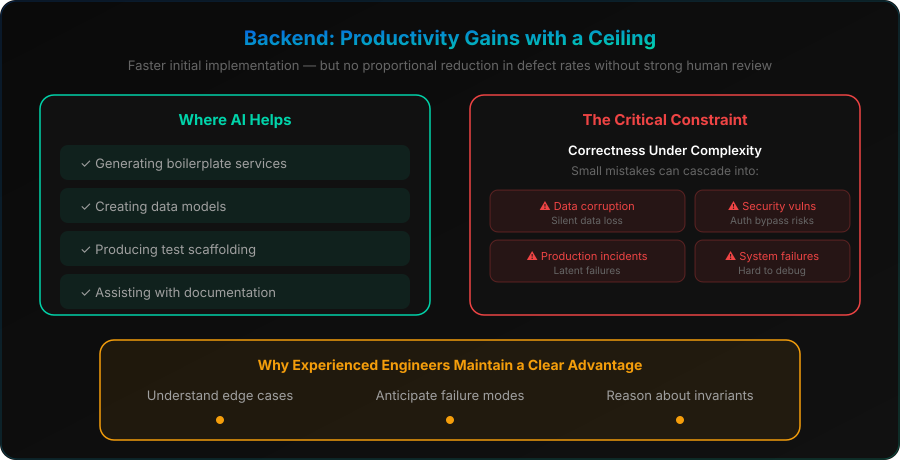
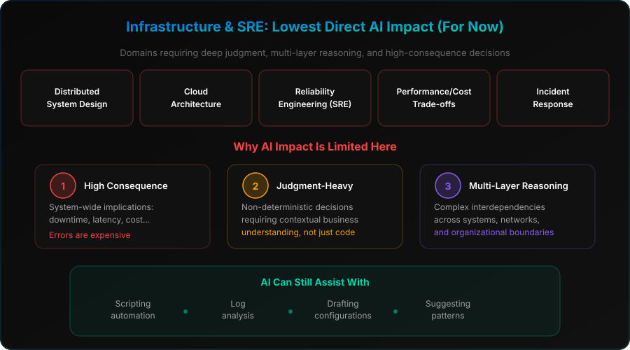
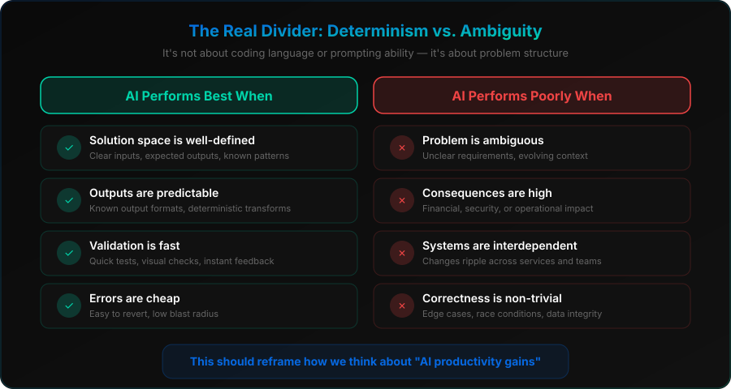
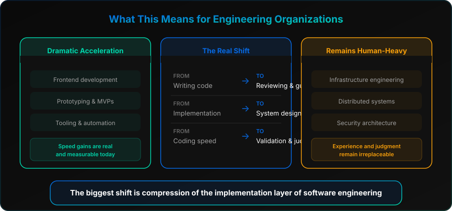

For the past 18 months, a significant part of my focus has been on AI-driven transformation in engineering organizations — particularly how we scale engineering effectiveness and throughput in a rapidly evolving landscape shaped by the rise of coding agents.
We are now at a point where AI-assisted development is no longer experimental and Human-AI Interaction (HAI) within single workflows is a reality. Tools like coding copilots and autonomous agents are actively reshaping how software is written, reviewed, and shipped. However, the impact is far from a uniform one-size-fits-all!
What's becoming increasingly clear is this:
Specifically:
- How deterministic the work is
- How costly mistakes are
- How much judgment, ambiguity, and exploration is required
- Whether the task is repetitive or deeply research-driven
This shift has important implications for how different engineering domains benefit from AI.

1. The Core Shift: From Skill Replacement to Augmentation
Early narratives around AI in engineering often framed it as a tool that would primarily "boost junior engineers" or "replace repetitive coding." The reality is more complex and nuanced.
Recent industry studies and real-world usage patterns (including GitHub Copilot deployments and internal engineering productivity experiments at large tech firms) show that AI acts less like a skill equalizer and more like a work-type amplifier.
AI Copilot agents are strongest where structure, repetition, and clear patterns exist.
AI Copilot agents are weakest where uncertainty, consequences, and system complexity dominate.

2. Why Frontend Engineering Sees the Biggest Productivity Uplift
Frontend development is currently one of the clearest beneficiaries of AI coding agents. Once a design system is established, frontend implementation becomes increasingly a speed problem, and AI is fundamentally a speed amplifier.
There are three structural reasons for this:
Modern frontend ecosystems are heavily standardized, creating a space where AI can reliably generate correct or near-correct code: component-based architectures, design systems (Material UI, internal design tokens), and well-defined UI patterns and conventions.
Frontend work has immediate visual feedback — you change code, then you see the UI; you adjust layout, then you instantly validate and iterate rapidly. This is exactly the kind of environment where AI thrives: short cycle time and low latency validation.
A large percentage of frontend work is repetitive in terms of forms, tables, layout scaffolding, and boilerplating.

3. Backend: Productivity Gains with a Ceiling (For Now!)
Backend systems show a more balanced and constrained improvement curve. AI tools are effective at generating boilerplate services, creating data models, producing test scaffolding, and assisting with documentation.
With that being said, backend systems introduce a critical constraint: correctness under complexity. Unlike frontend systems, small mistakes here can cascade into:
Data Corruption
Silent data loss and integrity violations
Latent Production Incidents
Failures that surface under load or edge cases
Security Vulnerabilities
Auth bypass, injection, and access control flaws
Hard-to-Debug System Failures
Hardcoded values and cascading errors

4. Infrastructure & SRE Engineering: Lowest Direct Impact (For Now)
Infrastructure engineering remains the domain with the least direct automation impact from coding agents — including distributed system design, cloud architecture decisions, reliability engineering (SRE), performance/cost trade-offs, and incident response systems.
Why AI impact is limited here:
High Consequence
System-wide implications — downtime, latency, cost
Judgment-Dependent
Non-deterministic decisions requiring contextual business understanding
Multi-Layer Reasoning
Complex interdependencies across systems and teams
AI can assist with scripting automation, log analysis, drafting configurations, and suggesting patterns — but it is not yet reliable for critical architectural decisions, ambiguous trade-off reasoning, and end-to-end system risk evaluation.

5. The Real Divider: Determinism vs. Ambiguity
Across all domains, a clearer framework emerges:
- The solution space is well-defined
- Outputs are predictable
- Validation is fast
- Errors are cheap
- The problem is ambiguous
- Consequences are high
- Systems are interdependent
- Correctness is non-trivial

6. What This Means for Engineering Organizations
We are seeing across the industry:
In frontend, prototyping, and tooling — AI delivers measurable speed gains today.
AI does not eliminate the need for experience; it shifts it from writing code to reviewing, constraining, and guiding systems — from implementation to system design and validation.
Infrastructure, distributed systems, and security architecture will short-term remain human-heavy domains.

Key Takeaways
References
- Stray et al. (2025), Developer Productivity With and Without GitHub Copilot — arxiv.org/abs/2509.20353
- Becker et al. (2025), Impact of AI on Experienced Developers — arxiv.org/abs/2507.09089
- METR (2026), AI Productivity Uplift Update — metr.org
- Xu et al. (2025), AI-assisted Programming and Maintenance Burden — arxiv.org/abs/2510.10165
- Li et al. (2026), AIDev Dataset of AI Coding Agents — arxiv.org/abs/2602.09185
- McKinsey (2025), Unlocking AI in Software Development — mckinsey.com
- McKinsey (2026), The AI Revolution in Software Development — mckinsey.com
- GitClear (2025), AI Code Quality Research — gitclear.com
- Index.dev (2025), AI Coding Assistants ROI Study — index.dev